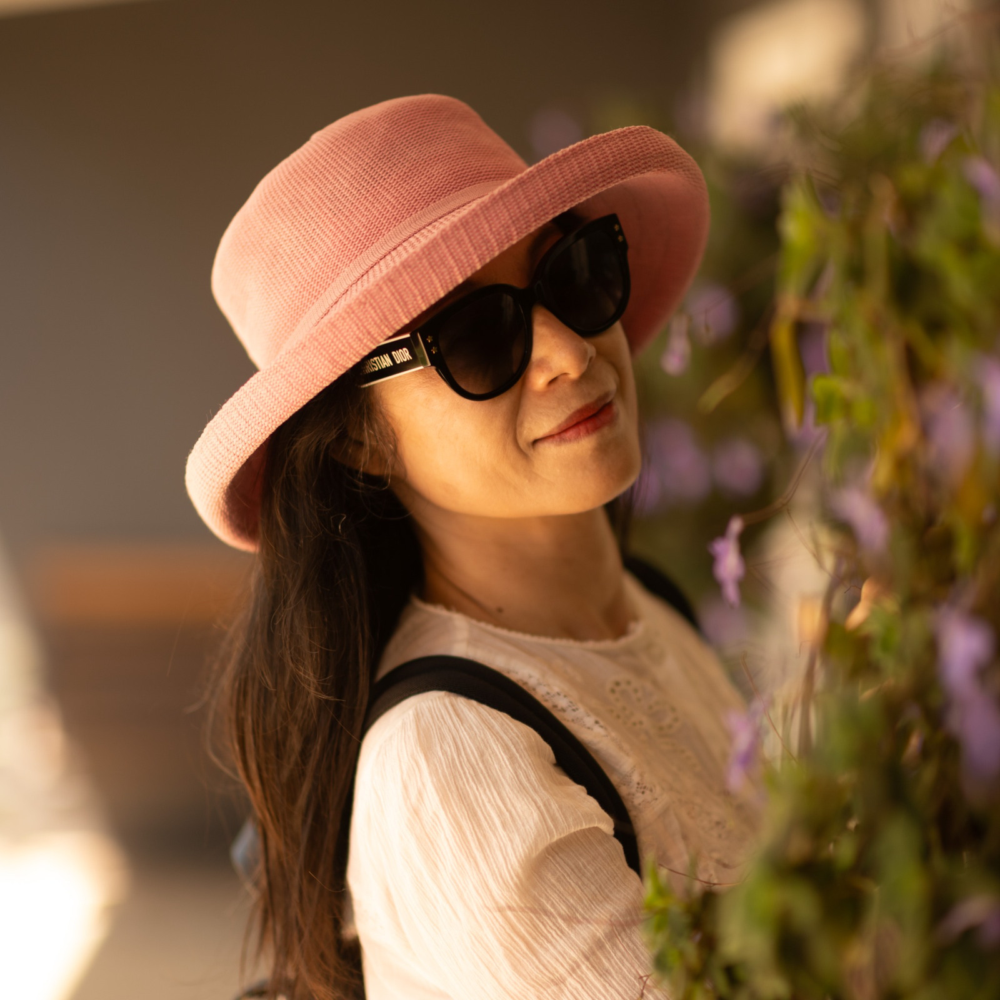

01 / 摄影札记
不等待光线，
是因为更理解光线。
Understanding the light in front of us

25秒摄影短片 / A photographic film
回看这张照片，我先注意到帽檐下的阴影。它没有遮住人物的神情，反而让脸部的明暗有了层次。浅色衣服接住较亮的部分，深色头发与眼镜留下安静的暗面；画面一侧虚化的花叶，又让人物与周围环境保持着联系。
这些关系，比把整张照片都照得明亮更值得留意。亮处可以吸引目光，暗处也能保留形体与气氛。面对不同的光线，摄影者需要作出的选择并不相同：站在哪里，让什么进入画面，又希望哪些细节被看见。
我想讨论的“不必等待光线”，不是忽略光线，也不是说任何一种光都能得到同样的效果。强弱、方向、遮挡与背景都会改变照片。理解这些差异，再理解相机怎样记录明暗，才有可能找到适合眼前画面的表达。
这也是《摄影，不必等待光线》正在整理的问题。摄影并非一定要等到预想中的“好光”才开始；有时，先把眼前的明暗看清楚，表达的方向就逐渐明确了。不等待光线，是因为更理解光线。
A photographic note on shade, brightness and the choices that shape an image. Understanding the available light can open a way to photograph; different light still produces different possibilities.